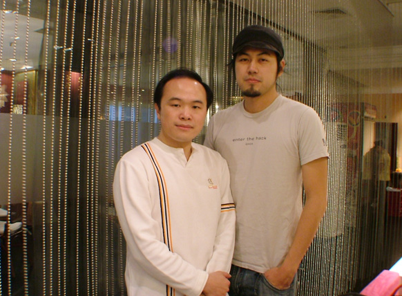
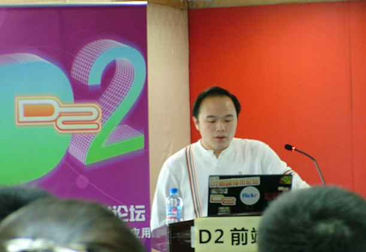
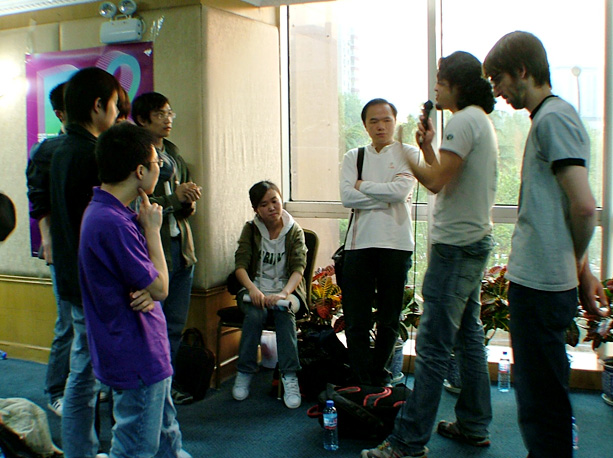
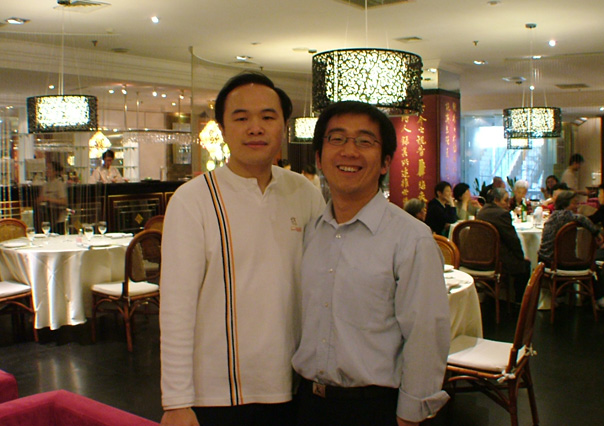

D2开始了，然后又结束了。很快，但留给我深刻的印象。这一届D2，我遇到了一些旧的朋友，看到了一个新的开端。一些故事发生了，很快在消失。然而D2，很快的又会到下一届了，我想……
一、故事的开始
来到北京之后第一次上网，就从我的MSN空间里看到一条消息，是克军发来的。克军，我并不认得，但他在消息中提到一件事：约我做第二届D2的讲师；提到一个人：Hedger Wang。
至于克军是Who，大家去看他的相册好了。满满当当的一大柜子：
先说Hedger Wang。大概是在四年之前，或者再早一点。我大概是在做一个项目时，用到了Hedger的一段JavaScript代码（是图遍历的），于是加了他的MSN，给他知会一下，征求他的同意。随后我们成了朋友，我知道了他是在台湾Yahoo，而他知道了我是一个用Delphi来做程序的开发人员。
后来Hedger就去了美国Yahoo，他去Yahoo之前我们还一直联系着，交换着旅游的照片，我给他看西藏、内蒙，他就给我看台湾的照片，哈哈，很开心的一段时间。聊着天，讲着台湾的选战……后来他就去了美国Yahoo。因为时差的缘故，我们能一起在MSN的时间就很少了。而过了不久，因为一点非常意外的原因，又在MSN上认识了他哥哥。一谈起来，我们的兴趣又有接近的地方，于是……
(有了绿叶，后面的Hedger就更夺目了
)然而毕竟还是不太常见Hedger了，最没想到的是Hedger会来D2做讲师，而巧合的是我也在被邀请之列。于是，当然的，不因为别的任何原因，我也要去的。所以我回了个消息给克军，不久便确定了我在D2上的演讲主题。
二、主题
克军之所以找我，大概会与我在SD2C大会上做的《JavaScript引擎技术》有关，也或许是出于另外一些朋友的推荐。但他没有限定我在D2上讲什么话题。而我呢，其实向来不喜欢不停地讲同一个东西——从这一点上说，我做不了专职讲师或某某领域的布道者，所以我的确不打算重复SD2C上的内容，或者以新书《JavaScript语言精髓与编程实践》为话题——因为事实在SD2C上的讲演就是以这个为话题的。
既然不打算讲JavaScript开发方面的技术问题了，那么总得讲点什么。而我大概在三年前就开始写一本名为“B端开发”的书，但后来放弃了（变成了现在这本新书）。而所谓“B端”就是“浏览器端”，其实讲的就是前端开发，其中有很大一部分是设计思想相关的。后来，在05年到07年我在盛大任架构师期间，参与了盛大盒子平台设计，这个过程中对用户界面设计、功能设计、用户流程、用户体验等设计技术，以及有关将UI从应用功能中分离出来的实现技术都有较长时间的涉及，这促使我在这次D2中将话题选在“设计与设计思想”上，而不是某种具体、以实现方法为中心的设计技术或开发技术。
克军当然是不了解我这样选择的背景的，不过他还是支持了我的选择。尽管我认为他和Hedger一样，对我的这个选择充满了担心。事实上，在D2第二天，Hedger就问我为什么会选设计话题而不是技术开发呢，因为他觉得那本《JavaScript语言精髓与编程实践》上的内容就很好，就很值得一讲。而我当时的回答，就是“不想讲重复的东西”。
当然，还是有一点私心的。我习惯自己做总结，对过去做过的事、或者历经过的思考做反思——我想，一个人的经历是重要的，而不是这些经历的结果。而这些所谓经历的体现，便是个人的反思了。所以这次我在D2中讲演，其实就是我的反思。

(D2开讲)
三、三本书
作为一点小小的宣传，我带了三本书到现场。另外还给Hedger带了一本。因为来得比较早，于是跟joy找了个位置坐下，不久便远远地看着Hedger来了，过去跟他打打呼的时候，一点都不陌生，然后随便地聊天。他很惊讶我在书中讲到的用JavaScript实现Aspect，我则告诉他不但有Aspect，还有完整的Interfaces。哈哈。
随后就是开场、讲演。我的段落控制得还不错，时间刚刚好。用了三个问题，把三本书送了出去。三本书的签名是很有趣的。第一本签的日期是2008.03.29，是这本书发布的时间，而且的确是当天（就是CSDN的英雄大会那天了）给china-pub签售时签的，当时自己买了两本，留给自己的，没想到用上了。而第二册签的是D2大会的当天时间，第三册则没有签时间。我当时解释说，我希望今后还能有机会见到大家，如果这样，我可以再把第三册的时间签上。
事实上，这三本书也是一个“源、流、汇”的意思，不知道得到赠书的朋友可有留心这点小小的设计。至于那个“汇”字，在古文中是与“会”通假的，也算是大家能再会于D2的一个期愿吧。
四、源、流、汇
源、流、汇其实是这次的一个非常重要的话题。但我临时地缩减了它的时间，因为这毕竟相对更“空”一些，不太适合在一个技术为主的论坛上多讲。所谓源、流、汇，其实首先是以内容为中心的互联网络的一个抽象。你可以看到WEB的核心就在这三个字上头，因为事实上WEB的核心就是内容。
做源的有没有？有，例如每一次变革的这些先驱者们——在所谓WEB2.0的时代，你不认为那些RSS、Ajax技术等等的倡导者就是“源”吗？就如同当年TCP/IP、以及URL之类的协议被创生的时代，谁又能洞见到今天WEB的发展呢？然而，正是那些TCP/IP、URL等才是WEB之源。
再如流与汇，实际是一个事物的常态与瞬态的关系。汇其实总是流的一部分——没有真正的汇，它只是瞬态的。我之所以拿Yahoo来做汇的例子，便是想说Yahoo把一个瞬态的东西做成了常态，没有变化——只能试图无限地做大，而又不能真正地“无限”，所以结果是它的发展道路上总是有阻碍的。而这阻碍，就好象冰之于水露，石之于河泽，如果你看成是瞬态，就解脱了；看成是常态，就僵死了。
很高兴还是有人从这个话题中看到了佛禅的味道，看到了我想说的一些东西。这，我已经很是满足了。大家不妨看看putcn的博客：
源、流、汇引导出的话题，就是WEB1.0是以内容为中心的。然而，接下来的话题是WEB2.0，我表达的观点是：WEB 2.0是以用户为中心的，从内容粘性走从功能粘性，从广告模式走向体验店模式。这是基本的观点，在这个观点之后展开的，就是WEB 2.0中的设计方法与关注点。这些就是具体的技术话题了。
然而那样漫长的讲演之后，可有人想过一个问题吗？——所谓功能，难道不是内容的一种形式吗？所谓“以用户为中心”，如果看成“以满足用户需求的功能——这样一种内容”为中心的话，那么整个的模式不仍旧是源、流、汇的问题吗？
任何东西，简单到一定的程度时，便没人会留意到了。例如源、流、汇，原本只是水流的形式，水无常形，势无常态，而这三个字，却概念了全部的水系。为什么呢？

(被偶然拍到的三人组，偶听讲的时候也很认真地...)
五、UC/UCC/D2,E2,C2
我并不是太喜欢搬概念的一个人，我读书的时候就尤其痛恨概念。但是，在我开始思考问题的时候，我不得不借用或创生一些概念名词。只有有了这些名词，我才能把问题陈述清楚。
我后来专门地看过思想方法的书籍，这是因为抽象思维的第一要素就是概念定义——如果没有明确的概念与定义，那么不可能进行有效的抽象思维。
所以我不得不将我这两年多来的工作定义在UC/UCC之样的名词上。其实说穿了，所谓“玩虚的”，就是因为那些一直在“做实”的人看不明白：那些所谓的虚，其实是做实之后的总结。
到了一个两个的名词上的时候，已经是精化了——所以也就显得虚了。
我完全不反对说“深入浅出”。然而于我自己而言，仍然在反思的阶段，仍然在“定义名词概念并深入思考”的阶段，我又何能给大家“浅出”呢？所以我一再强调，D2上的话题，是我的反思。但于听众而言，能理解多少，取决于经历了多少，以及反思了多少。我没有办法把这些讲得更“浅出”，因为我的功力还不够。
那么UC/UCC/D2,E2,C2是什么呢？下面这张图就讲的是这个，看幻灯的朋友可以翻到第55页。
听说过些天现场的录像要出来，那就更好了。——我说过，我不喜欢重复讲，所以大家便去听好了。哈哈。
图呢，在Borin的博客里有，我就不单贴了。在这里去看便是：
这套幻灯比较大，我找不到地方放了，回头等D2官方发布吧。这里应该会有新消息：http://club.cn.yahoo.com/day2
六、朋友
中午吃饭的时候叫了克军，但他却坚持要跟Yahoo的同事们一起坚守战线，所以未能成行。博文这次安排了几位编辑策划过来，她们对我讲的话题倒是很有兴趣。只可惜午饭没能约在一起——Hedger下午还有讲演，急急地便促着要走了。
正好看到了图灵的总编刘江老师，便拖到一起，满天满地地找饭馆happy去了。与Hedger谈笑之间，才知道台湾人民对大陆的误会有多深。因为Hedger见到一本外版书被国内翻译出版了，出版社是“人民邮电出版社”——就是图灵的上家了，便认定是“盗版”了，说他认为出版社不可能由“邮电”这样的机构来做，肯定是盗版者随便取的名字。
哈哈。刘江老师大大地喊冤。是啊，在台湾或许是不能。但在大陆，出版机构最早都是国企或政府机构下的单位，象清华出版社这种挂在院校下的并不象想见的那么多的。要按照Hedger的理解，大概机械工业、电子工业这些，也全成了盗版总源头了。哈哈哈。
所以刘江老师便跟Hedger谈开了整个中国出版业的发源与经历，什么体资改革呀之类，也不管我们的台湾朋友听不听得懂。不过说实在的，Hedger对中国近代的、以及建国以后的历史很感兴趣，我们谈得很广泛。相互推荐了很多的书。
下午再回会场，又见了月影。在前端开发者的会议上，要是不出现他，大概就是不正常的了。
跟他聊了聊他的书，聊了聊一些JS的东西，他便要到前排去听Hedger讲了。我在听Hedger的内容时打了个盹，没法子，他讲的前半部分是基于PHP的RPC，我很早先便用过。而后半段，则讲的是客户端数据(请求)缓存，以及相关问题的解决方案。这倒是很有些新意的。
在听Hedger的讲时，Nate Koechly坐在我的旁边。他总是面带笑意的，很亲切。但我的E文实在不过关，尝试问了一下他能否用中文交流后，放弃了——我居然用中文问他的，哈哈，他要听得懂才怪，后来想想，这个E文的问句我还讲得出来，只是不习惯，所以当时便没这么讲。Nate给我发了一个YUI的即时贴，很有趣，他的本本上全是贴的类似东西。后来Nate的讲演我全程听了，结合着他的幻灯，他讲的内容我大概还听得明白。简单的说，就是YUI很好很强大。往复杂里看去，大家去找视频吧。顺便做个广告，他的讲演是当天最好的，幻灯也做得最好。哈哈。
总的来说，吃了好几顿饭。台湾朋友的礼数总是很讲究，我请了Hedger饭饭，他便非要回请不可，这个就不跟他争了，成人之美，也是好事。这顿饭约在周日晚上，席间有两位Yahoo的工程师作陪，可惜他们没带名片，Hedger也没有一一介绍，所以尽管我们谈得很欢，但名字却没有记得。哎~朋友嘛，一定要知名的么？
所以，名字并不重要，重要的是我们成了朋友。下一届D2，我们再会。如同我最后签名的那本书一样，时间并不重要，重要的是我相信这个时间一定会到来的。

(我与笑呵呵的刘江老师)